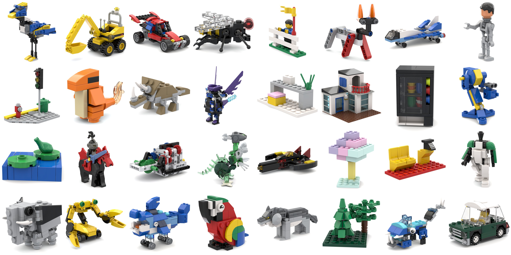
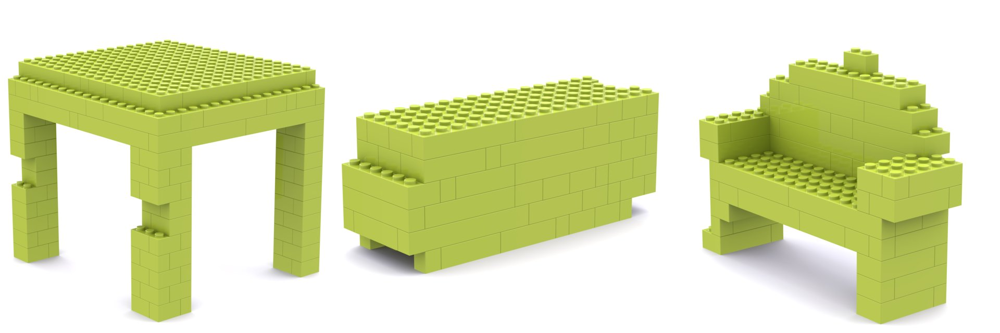
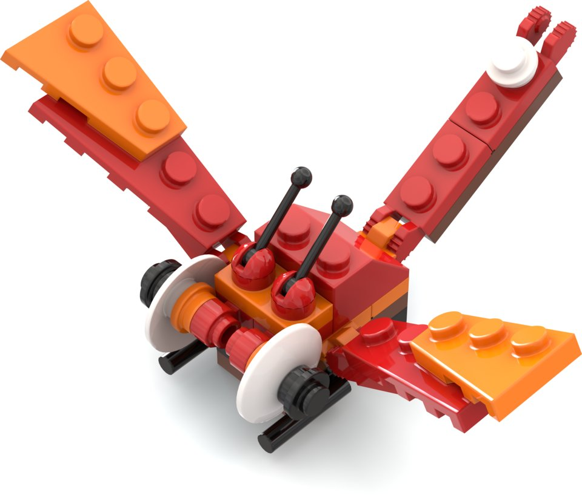
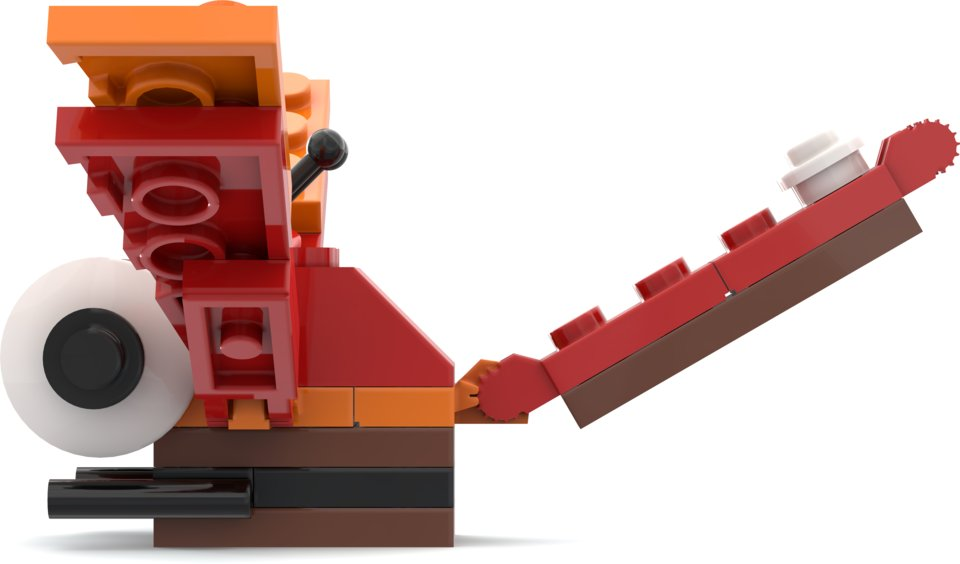
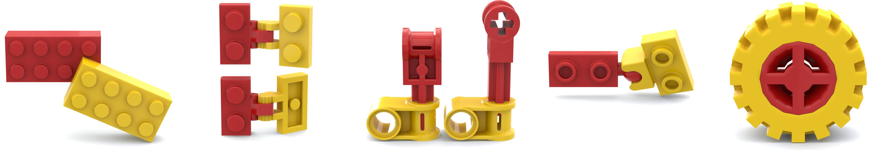
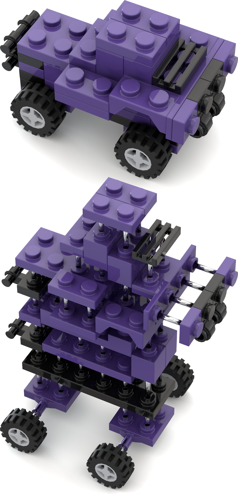
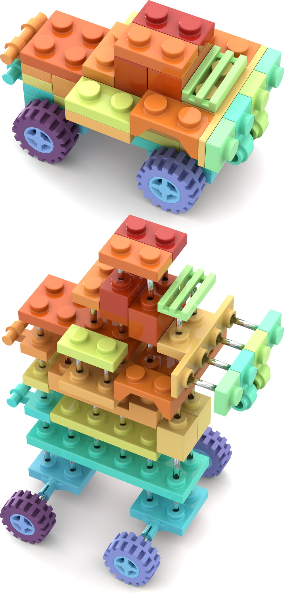
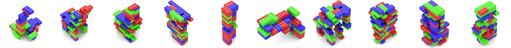
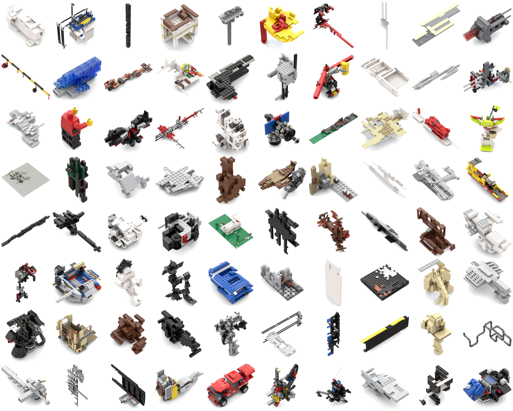
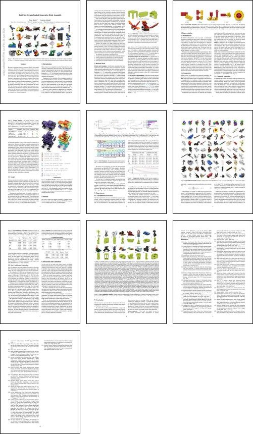

BrickNet: Graph-Backed Generative Brick Assembly

Motivation



To teach a model to autoregressively generate brick structures in a discrete, voxelized domain, it is intuitive to train it to regress 3D coordinates (a), as in BrickGPT (Pun et al., 2025). However, doing so becomes more difficult when dealing with the complexities of real-world objects (b). Starting at the orange hinge plate (1) and placing bricks down to the white stud (5) at the end requires maintaining a high degree of numerical precision across steps.
Connectivity Semantics

We broadly model five types of connectivity between bricks. Stud (a) connections, after defining which stud connects to which hole, have at most one degree of freedom. Hinge (b) connections have a degree of rotational freedom, and often the ability to be flipped (binary). Axle (c) connections inherit the same freedom as hinges, but can also be offset along their principal axis. Ball (d) connections have three degrees of rotational freedom. Fixed (e) connections have no degrees of freedom.
Graph Visualization


After encoding relative transformations between parts into their connectivity, we arrive at connected graphs.
From these graphs, we can sample iterative build instructions (spanning trees), that begin at a root part,
add another part, define an edge that connects that part with the existing structure, and on.
For example, see the dark red piece at the top of the render in (b).
This corresponds to part 0 in the graph, the root node.
From that, it has two neighbors, both brick 1x2, which are added to the structure.
Each bracketed item corresponds to a discrete placement “action.”
Dataset Statistics
We present BrickNet, a large-scale dataset of brick structures. In contrast to the voxelized BrickGPT (Pun et al., 2025), our samples include thousands of distinct part types. Relative to the Official Model Repository (OMR) data used in Break and Make (Walsman et al., 2022), our set is much broader.
| Dataset | Samples | Parts | Color | Captions | Real |
|---|---|---|---|---|---|
| BrickGPT | 28,259 | 8 | ✗ | ✓ | ✗ |
| OMR | 1,814 | 5,005 | ✓ | ✗ | ✓ |
| BrickNet-PT | 320,808 | 9,743 | ✓ | ✗ | ✓ |
| BrickNet-SFT | 67,185 | 6,457 | ✓ | ✓ | ✓ |
Unconditional Samples


Random samples drawn from either BrECS (Ahn et al., 2024) (a) or our model (b).
Text-Conditioned Samples
Samples produced using prompts from the evaluation set. Within each pair, our outputs are above and those of BrickGPT (Pun et al., 2025) are beneath. Click any cell to read its full prompt.
1This is a LEGO model of a stylized, light-green bamboo stalk with leaves...
2This LEGO model depicts a small, gray stone shrine or altar...
3This is a LEGO model of a white and grey handheld device...
4This is a LEGO model of a traditional black and gold rickshaw...
5This is a LEGO model of a rectangular, dark red gift box...
6This LEGO minifigure features vibrant red hair...
7This is a blue LEGO sports car model...
8This is a detailed LEGO model of a black espresso machine...
9This LEGO model features a minifigure in a red torso and Santa hat...
10This LEGO model is a rectangular patch of dark green grass...
11This is a LEGO model of a large, cylindrical purple container or barrel...
12This is a simple, abstract LEGO vehicle constructed from primary-colored bricks...
13This LEGO model is a colorful, low-profile bed...
14This is a 3D digital model of a stylized, blocky LEGO vehicle...
15This is a LEGO model of a black squirrel...
16This LEGO model depicts a dilapidated, single-room shelter or bunker...
Paper

Abstract
We train a language model to generate LEGO®-brick build sequences. While prior work has been restricted to discrete, voxel-like towers, we consider a much broader set of pieces, encompassing thousands of part types with diverse connection semantics. To enable this, we first collect a large-scale dataset of over 100,000 human-designed LDraw brick objects and scenes. The complexity of our setting makes it challenging to autoregressively assemble structures that satisfy physical constraints. When predicting block pose directly, build sequences quickly become invalid after a small number of steps. Although pieces are placed in 3D space, it is the spatial relationships of the parts which define the whole. With this in mind, we design a graph-based program representation that parametrizes structure through connectivity, improving the physical grounding of generated sequences. To enable future applications, we make our dataset and models available for research purposes.
BibTeX
@inproceedings{kulits2026bricknet,
title = {{BrickNet}: Graph-Backed Generative Brick Assembly},
author = {Kulits, Peter and Schmid, Cordelia},
booktitle = {CVPR},
month = {June},
year = {2026},
}